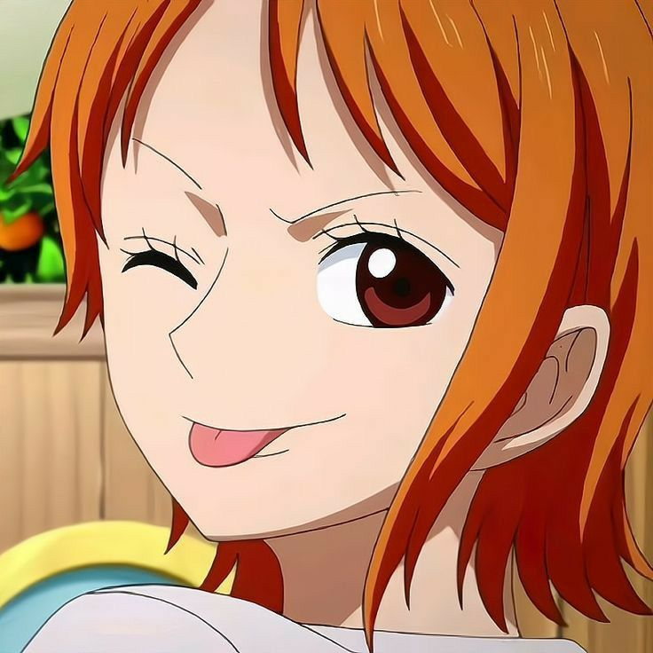
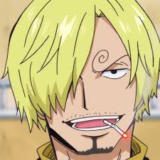

Odehrává se v
fantasy světě který je z většiny tvořen mořem s ostrovy. Přesto je celý svět rozdělován velkým kontinentem
"Red
Line" který se táhne okolo celé planety. Dále je svět rozdělen pásem moře které se nazývá "Grand Line" ve
kterém
jsou mnohem nepředvídatelnější podmínky než v ostatních mořích. Kolem "Grand Line" se z obou stran táhne pás
"Calm belt" ve kterém nevedou žádne vodní proudy a ani nefouká vítr.
Lidé v tomto světě mohou sníst ďábelské ovoce které jim umožňují mít obnormální schopnosti, jako třeba
tvorba blesků, proměna ve zvíře či nějaký přírodní element. Po snězení tohoto ovoce ale přicházejí o
schopnost plavat.
Luffy je hlavní postava One Piecu. Luffy je na začátku série sedmnáctiletý hoch, který se sám vypravil
hledat poklad One Piece, protože ten kdo
tento poklad nalezne se stane králem pirátů. Luffy snědl takzvaný "Gum gum fruit" což je ďábelské ovoce
které jemu tělu přidává vlastnosti gumy. Díky tomu se může celé jeho velmi roztahovat, je odolná vůči
bleskům a tak dále. Jeho hlavní vzhledový znak je jeho slaměný klobouk podle něhož je i pojmenována jeho posádka "Straw hats". Po celou dobu své cesty potkává nové lidi kteří se k němu na
jeho
cestu přidávají a chtějí z něj učinit krále pirátů.
První člověk který se k Luffymu přidá je Zoro. Zoro je šermíř jehož cílem je se stát nejlepším šermířem na
světě. Luffy Zora potká přivázaného ke kůlu a nabídne mu, že ho zachrání když se k němu přidá. Zoro nemá
jinou
možnost a nabídku přijme. Zoro se prakticky stává pravou rukou Luffyho.
Mezi jeho vlastnosti charakteru patří alkoholismus a neexistence orientačního smyslu.
Po Zorovi se k Luffymu přidá Nami. Nami je navigátorka a tedy kritická součást posádky. Jejím životním snem
je
zmapovat celý svět. Zprvu se Nami snaží jen Luffyho okrást aby mohla vykoupi svojí vesnici od piríta který
se jmenuje Arlong, ale k Luffymu se po pádu Arlonga přidá a stává se jedním z nejvěrnějších členů posádky.
Nami má velmi blízko k penězům a stará se o finance posádky. Velmi často se na zbytek posádky naštvává a
nutí je se u ní zadlužit.

Ussop je ostřelovač který používá prak. K Luffymu se přidává aby se stal statečným válečníkem. Při jeho
příchodu dostává posádka od Ussopovi kamarádky svojí loď (do té doby měly pouze malou loďku, nyní mají
mnohem větší loď) která se jmenuje "Going Merry". Později v příběhu se Ussop od posádky oddělí kvůli
neshodám s Luffym ale poté se opět k Luffymu přidá.
Ussop má v oblibě velmi často lhát a vymýšlet si.
Sanji je velmi schopný kuchař který pracuje v restauraci na moři. Jednoho dne chce najít "All Blue" což je
místo kde se dají najít všechny ryby světa. Pro dosáhnutí tohoto cíle se přidá k Luffymu a stane se kuchařem
posádky. Také zaujímá roli levé ruky Luffyho. Jeho bojový styl se zaměřuje na útoky nohama, protože jeho
ruce jsou pouze pro vaření.
Sanji je vyloženě gentleman který by za žádných okolnosti neublížil ženě. Zároveň projevuje náklonnost každé
ženě kterou potká.

K posádce se přidaly i další postavy, ale ty zde již jmenovat nebudu. Popisuji pouze postavy které s Luffym
vpluly do "Grand Line".